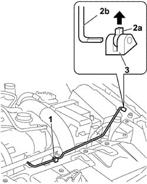

7025A58 DEVICE FOR KEEPING BONNET LID OPEN - R+R
- Path
- Procedures > 70 FITTINGS > 7025 COMPARTMENT COVERS > 7025A BONNET LID > 7025A58 DEVICE FOR KEEPING BONNET LID OPEN - R+R
- Kind
- repair procedure (removal / refitting; the operation number is the code)
- Applies to
- all engines; all production periods
- Interactive page
- https://sloeber94.github.io/elrnDB-fCrm/en/#/194000963
Applies to: all engines; all production periods
 Removing
Removing
 Refitting
Refitting- Open the bonnet and support it appropriately.
1. Release the rod from the retaining clip and remove the clip from the upper crossmember.
2. Release the safety clip (2a) and release the support rod (2b).
3. Rotate the bonnet stay rod and remove it from the upper crossmember.

Applies to: all engines; all production periods
Refitting
Removing- Fit the bonnet stay rod support and secure it to the upper crossmember by rotating it until it locks.
- Fit the bonnet stay rod retaining clip and secure it to the upper crossmember by rotating it until it locks.
- Fit the rod in the support and secure it using the safety clip.
- Secure the support rod to the clip.
- Close the bonnet.